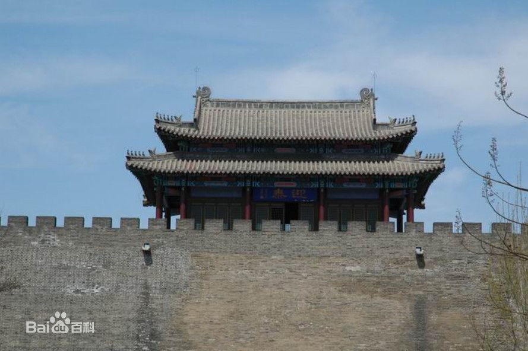
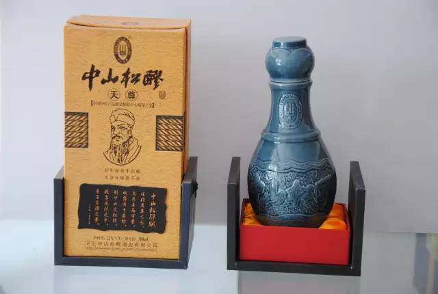

定州古迹
定州八景
开元寺塔、众春园庶、雪浪寒斋、中山后圃、平山胜迹、西溪玩月、唐水秋风、续阅古堂

定州名吃
定州手掰肠：以精肉为主，内配多种纯中草药作为香料制成。
定州焖子：北方常说的焖子是驴肉火烧河间派的食物，皮冻状，佐食驴肉增加口感。定州焖子不是此类，它是一种肉类枕状熟食，像香肠，但是比香肠粗得多，大约像小腿那么粗。长度大约是30厘米到40厘米。
定州新宗熏肉：北宋年间，苏东坡到河北定州任职，根据定州人的肉食习惯，和衙厨王某一起，制成了定州熏肉，并且书写了熏肉秘法，后来由王某后人传承下来，被称为新宗熏肉。
中山松醪酒：中山松醪酒之所以独享盛名，源于宋代名家苏东坡的一首《中山松醪赋》。北宋哲宗年间，苏东坡出任定州太守。由于爱饮松醪酒，苏东坡根据当地的松醪酒酿造工艺，亲自收集材料，以当地的黑龙泉水自酿松醪酒。由于中山国曾定都于定州，所以苏东坡便把自己在定州酿制的酒称为“中山松醪酒”。
定州焖子：北方常说的焖子是驴肉火烧河间派的食物，皮冻状，佐食驴肉增加口感。定州焖子不是此类，它是一种肉类枕状熟食，像香肠，但是比香肠粗得多，大约像小腿那么粗。长度大约是30厘米到40厘米。
定州新宗熏肉：北宋年间，苏东坡到河北定州任职，根据定州人的肉食习惯，和衙厨王某一起，制成了定州熏肉，并且书写了熏肉秘法，后来由王某后人传承下来，被称为新宗熏肉。
中山松醪酒：中山松醪酒之所以独享盛名，源于宋代名家苏东坡的一首《中山松醪赋》。北宋哲宗年间，苏东坡出任定州太守。由于爱饮松醪酒，苏东坡根据当地的松醪酒酿造工艺，亲自收集材料，以当地的黑龙泉水自酿松醪酒。由于中山国曾定都于定州，所以苏东坡便把自己在定州酿制的酒称为“中山松醪酒”。

戏剧曲艺
定县秧歌： 又称定州大秧歌，起源于河北省定县黑龙泉一带。流行于河北 保定以南、石家庄以北的部分农村。源于民间的劳动歌曲，相传北宋诗人苏东坡曾为其填词正曲，故又称“苏秧歌”。 大秧歌演唱的剧目，多是当地民间生活故事题材。当地群众又称秧歌戏是“栓老婆桩子”(以多演婆婆妈妈的家庭戏为主)。内容虽多倾向于封建礼教、向往婚姻自由，抨击忘恩负义、损人利己，但却往往和封建性的糟粕及一些不健康的东西夹杂在一起。后经戏曲改革工作，去芜存菁，不但整理保留了相当多的传统剧目，而且还移植了一批其它剧种的优秀剧目。传统戏有《双锁柜》、《老少换》、《王小赶脚》、《杨八姐游春》、《天仙配》、《白蛇传》、《梁山伯与祝英台》等。创城记
关于2017“美丽河北 最美定州”主题宣传活动实施方案
近期省委宣传部印发了《2017“美丽河北”主题宣传活动实施方案》，为全面展示定州良好形象，进一步提升定州美誉度，助力经济强市、美丽定州建设，结合当前正在开展的“多城联创”工作，经市委有关领导同意，决定2017年组织开展“美丽河北 最美定州”主题宣传活动。方案如下：
一、总体安排
以全面贯彻落实省第九次党代会、市第七次党代会精神、迎接宣传贯彻党的十九大为主线，以描绘定州好风光、讲述定州好故事、传播定州好声音、展示定州好风尚为总要求，以服务优化营商环境为重点，以“最美人物”和“最美景物”系列推选展示活动为载体，结合“多城联创”工作的开展，通过公开推选、重点推介、评议展示、集中宣传的方式，拓展全媒体传播渠道，在全社会营造发现美、展示美、传播美、建设美的浓厚氛围，进一步激发广大干部群众热爱家乡、建设家乡、奉献家乡的内生动力。二、活动时间
2017年3月-12月三、具体内容
（一）“最美人物”推选系列 （二）“最美景物”展示系列四、实施步骤
（一）启动实施阶段（3月份） 各责任单位要高度重视，迅速启动此项活动，制定具体方案，分阶段推进实施。
（二）推选展示阶段（4-8月） 2017“最美定州”最美系列推选采取“行业推”“媒体推”“网络推”以及自荐模式。 在发布展示阶段，各责任单位要在本部门内覆盖面较广的网络媒体组织票选，根据票选结果，经主管领导审核后，每个项目推荐1-2名，推荐名单于6月底前报市委宣传部理论宣教科。市委宣传部将定期召开协调推进会，了解掌握各单位活动推进情况。 7-8月，市委宣传部通过定州日报、定州电视台、“定州发布”、定州政府微网等对评选结果进行公示，召开由行业专家、媒体代表和热心网友组成的评审会，最终确定各项“最美人物”、“最美景物”名单，并进行汇报上报。
（三）集中宣传阶段（9-12月） 积极参与和配合省委宣传部关于2017“美丽河北”主题宣传活动，特别是对获奖的单位和个人进行集中宣传报道。